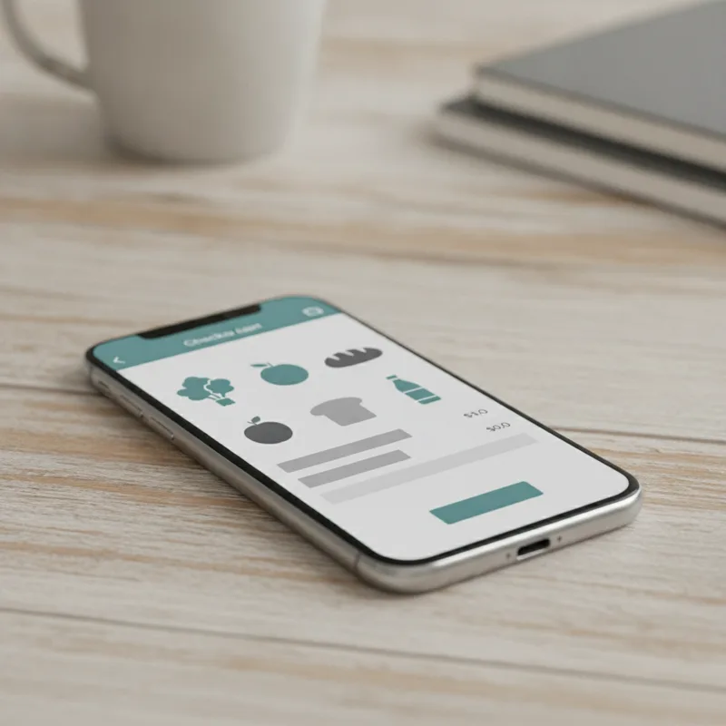

늦은 밤 다음 날 아침에 필요한 식재료를 장바구니에 담다 보면 배송 마감 시간이 임박해지기 쉽습니다. 마감에 임박해 급하게 결제 버튼을 누르다 주소 입력이나 결제 오류로 시간이 지나버리면, 주문은 당장 내일 아침이 아닌 모레 배송으로 넘어갑니다. 이런 난감한 일은 흔히 일어납니다.
온라인 장보기 시장이 확대되면서 각 커머스 플랫폼은 새벽배송 마감 시간과 최저 주문 금액, 무료 배송 조건을 다르게 적용하고 있습니다. 단순히 월 구독료 수치만 보고 가입했다가 정작 필요할 때 배송 제한에 걸리거나 최소 주문 금액을 채우지 못해 불필요한 지출을 하는 상황이 발생하는 이유입니다.
실제 장바구니 이용 패턴을 기준으로 주요 멤버십의 배송 조건과 적립 혜택을 다각도로 살펴볼 필요가 있습니다.
쿠팡 와우 멤버십은 월 7,890원의 구독료로 운영됩니다. 일반 로켓배송 상품은 금액 제한 없이 1개만 사도 무료 배송이 적용되지만, 신선식품인 로켓프레시는 정해진 최소 주문 금액을 채워야 주문이 가능합니다.
주문 마감 시간은 지역과 물류센터 재고 상황에 따라 다소 차이가 있으나, 보통 밤 12시 이전까지 결제를 완료하면 다음 날 아침 7시 전까지 문 앞에 도착합니다. 야간 근무나 늦은 밤 쇼핑을 즐기는 사용자에게는 마감 시간이 상대적으로 여유롭다는 점이 강점입니다.
쿠팡은 빠른 배송 외에도 쿠팡이츠 무료 배달과 쿠팡플레이 시청 권한을 멤버십 하나로 묶어 제공합니다. 식재료 장보기 외에 배달 음식 주문이나 동영상 시청 빈도가 높은 가구라면 월 7,890원의 가치를 충분히 뽑아낼 수 있습니다. 하지만 한 달에 신선식품을 소량만 가끔 구매하는 경우에는 매달 지불하는 고정 구독료가 다소 부담스럽게 다가올 수 있습니다.
네이버플러스 멤버십은 월 4,900원 또는 연간 결제 시 월 3,900원 수준으로 이용할 수 있는 서비스입니다. 그동안은 네이버 쇼핑 적립금 확대가 주력 혜택이었으나, 최근에는 N배송 유료 회원 전용 시스템을 도입하며 새벽배송 경쟁에 본격적으로 가담했습니다.
네이버 새벽배송은 입점 판매자 및 풀필먼트 협력사에 따라 마감 시간이 다릅니다. 대체로 밤 11시에서 12시 사이에 주문을 마감하며 다음 날 새벽에 상품을 받게 됩니다. 네이버는 협업을 통해 네이버플러스 멤버십 회원이 무료 새벽배송 혜택을 받을 수 있도록 설계했습니다.
기존 네이버 쇼핑에서 생필품이나 일반 상품을 자주 구매하여 최대 5%의 네이버페이 포인트를 적립받던 사용자라면, 장보기 영역까지 멤버십 하나로 해결할 수 있어 효율적입니다. 넷플릭스 광고형 스탠다드 요금제 선택 옵션 등 디지털 콘텐츠 혜택도 다양하여 다방면에서 활용도가 높습니다.
컬리는 월 1,900원이라는 저렴한 구독료로 컬리멤버스를 운영하고 있습니다. 멤버십에 가입하면 매달 적립금 2,000원을 즉시 돌려주기 때문에, 한 달에 한 번이라도 컬리를 이용한다면 사실상 구독료 부담이 전혀 없는 구조입니다.
배송 조건 면에서는 멤버스 고객에게 2만 원 이상 구매 시 사용할 수 있는 무료 배송 쿠폰을 매달 31장 지급합니다. 일반 회원의 무료 배송 기준선인 4만 원에 비해 허들이 절반으로 낮아집니다. 밤 11시까지 주문하면 다음 날 아침 7시 전에 도착하는 '샛별배송'이 기본 축을 이룹니다.
거기에 더해 오후 3시 이전까지 주문을 완료하면 당일 밤 자정 전까지 상품을 전달해 주는 '자정 샛별배송' 서비스도 도입되었습니다. 퇴근 후 저녁 식사 재료나 다음 날 쓸 물품을 당일 밤에 받아 정리해 두고 싶을 때 유용하게 쓰입니다. 오직 고급 식재료와 소포장 신선식품 위주로 장을 보는 가구라면 가장 실속 있는 선택지가 됩니다.

각 플랫폼이 자랑하는 빠른 배송 서비스가 모든 지역에서 동일하게 제공되는 것은 아닙니다. 수도권 및 주요 대도시를 벗어난 지방 외곽이나 일부 도서 산간 지역에서는 새벽배송 제한 구역으로 분류되어 일반 택배 배송으로 전환되기도 합니다.
거주지가 쿠팡 새벽배송 제한 지역에 해당할 경우, 와우 멤버십에 가입하더라도 로켓프레시 이용이 제한되거나 일반 로켓배송만 제공되는 경우가 있습니다. 컬리 역시 샛별배송 불가 지역에서는 별도의 배송 및 마감 조건이 적용됩니다. 가입 전 본인의 거주지 도로명 주소가 새벽배송 가능 권역인지 반드시 검색해 보는 과정이 필요합니다.
또한 마감 시간이 임박하면 주문이 몰려 인기 신선식품이 조기 품절되는 일도 흔히 발생합니다. 배송 마감 시간에 임박해서 결제하기보다는 최소 30분 정도 여유를 두고 장바구니를 마무리하는 것이 시행착오를 줄이는 방법입니다.
주문 단위와 라이프스타일에 따라 가장 유리한 서비스는 명확히 갈립니다.
가장 먼저 고려해야 할 것은 월간 장보기 횟수와 일상 서비스 이용 범위입니다.
식재료 구매 외에도 배달 음식을 자주 시켜 먹고 쿠팡플레이로 스포츠 경기나 예능을 즐겨 본다면 월 7,890원의 쿠팡 와우 멤버십이 단연 유리합니다. 로켓프레시 최저 금액 1만 5천 원만 채우면 배송비 걱정 없이 언제든 소량 주문이 가능합니다.
반면 네이버 쇼핑을 통한 일반 상품 구매액이 크고 네이버페이 포인트를 모아 관리하는 타입이라면 네이버플러스 멤버십이 적합합니다. 컬리N마트를 통해 2만 원 이상 구매 시 무료 새벽배송을 받으면서 최고 수준의 적립 혜택을 동시에 챙길 수 있기 때문입니다.
신선식품을 2만 원 안팎으로 소량씩 자주 구매하는 1인 가구나 맞벌이 가구라면 컬리멤버스가 훌륭한 대안입니다. 1,900원의 구독료를 적립금으로 전액 환급받으면서, 매일 2만 원 이상 무료 배송 쿠폰을 활용해 알뜰하게 장을 볼 수 있습니다.
무조건 남들이 많이 쓰는 대형 플랫폼을 고르기보다는, 본인의 주거지 새벽배송 가능 여부와 한 달 평균 장보기 금액을 먼저 계산해 보는 것이 지출을 줄이는 첫걸음입니다.
주요 커머스 플랫폼의 멤버십 구독료와 새벽배송 마감 시간, 최소 주문 금액 등은 서비스 정책 변경에 따라 변동될 수 있어 공식 안내 페이지를 사전 확인하는 것이 좋습니다. 유료 멤버십 가입 시 실제 배송 만족도나 거래 조건을 객관적으로 살펴보고 본인의 장바구니 이용 형태에 맞는 플랫폼을 선택하는 것이 합리적입니다.
| 슬롯 | 위치 | 기준 블록 | 근거 |
|---|---|---|---|
🖼 이미지 1 grocery-delivery-membership-compare-2026-01-intro.webp | 문단 2 뒤 | P · 늦은 밤 다음 날 아침에 필요한 식재료를 장바구니에 담다 보면 배송 마감 | 도입부 첫 문단 뒤(히어로) |
| 📢 광고 1 | 문단 9 앞 | H2 · 월 4,900원 네이버플러스 멤버십, 네이버 새벽배송과 적립금의 시너지 | H2 앞 · 직전 광고와 — 간격 |
🖼 이미지 2 grocery-delivery-membership-compare-2026-02-middle.webp | 문단 17 앞 | H2 · 새벽배송 제한 지역과 당일 자정 도착 서비스 변수 | 글자수 기준 중간에 가장 가까운 소제목 앞 |
| 📢 광고 2 | 문단 21 앞 | H2 · 소비 패턴별 구독 서비스 선택 가이드 | H2 앞 · 직전 광고와 1114자 간격 |
🖼 이미지 3 grocery-delivery-membership-compare-2026-03-end.webp | 문단 29 앞 | P · 주요 커머스 플랫폼의 멤버십 구독료와 새벽배송 마감 시간, 최소 주문 금 | 마지막 문단 앞(마무리) |